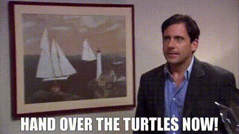
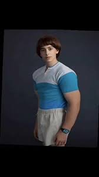

THE OFFICE !!!!

Release Year: 2008
My Review: Genuinely my all time favorite show. I mean there are other bangers out there that I could prob agree are better but the office is literally home to me bro. Watched this bad boy over 14 times 😠(probably unhealthy)
Rating: WHEREARETHETURRTTTLLEEEESSSS/10
(no audio available bc it's late)
Stranger Things

Release Year: 2016
My Review: ngl overrated and kinda funky at the end with swole will. besides that tho it was fire (my opinions aren't contradicting at all i promise)
Rating: 3.14/10
(no audio available bc it's late)
Breaking Bad

Release Year: 2008
My Review: ok ngl such a fire series like dude one of my top 5 by far. I will say tho the first episode is kinda wild for new watchers because like dead bodyparts everywhere and such but ehh it's fine. Als Wultah White aka Bryan Cranston's aka HEISENBURG is actually insane as an actor like this dude played in EVERYTHING like EVEN MADAGASCAR BRO which I never knew but yeah.
Rating: funkybluesubstance/10
(no audio available bc it's late)